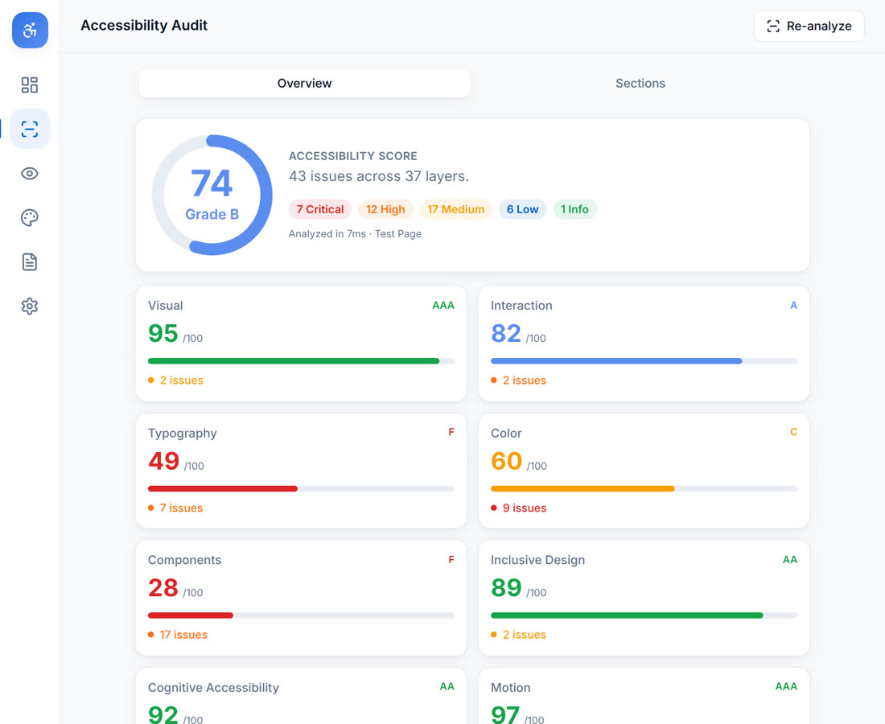
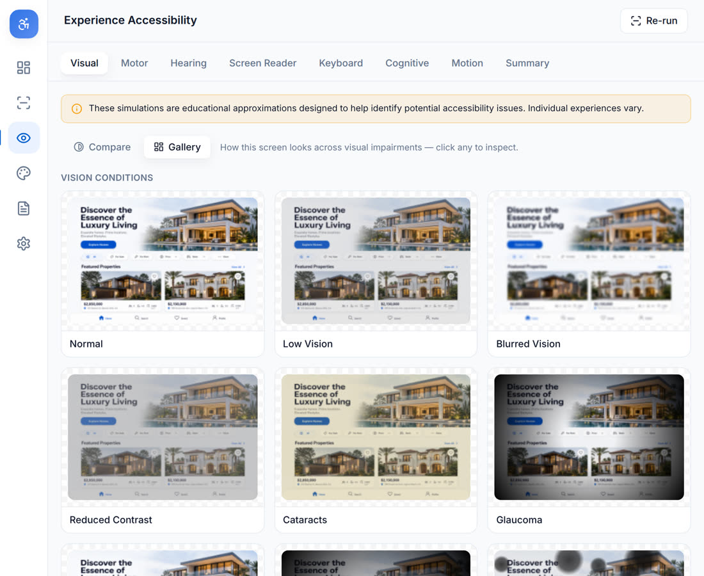
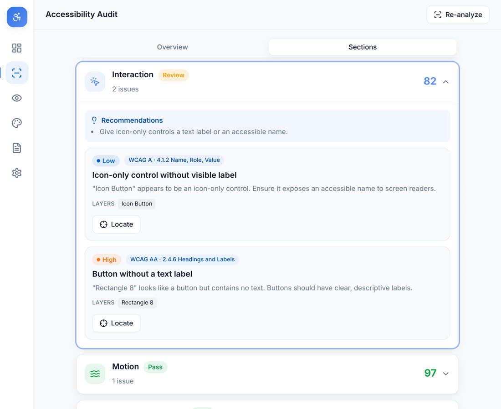
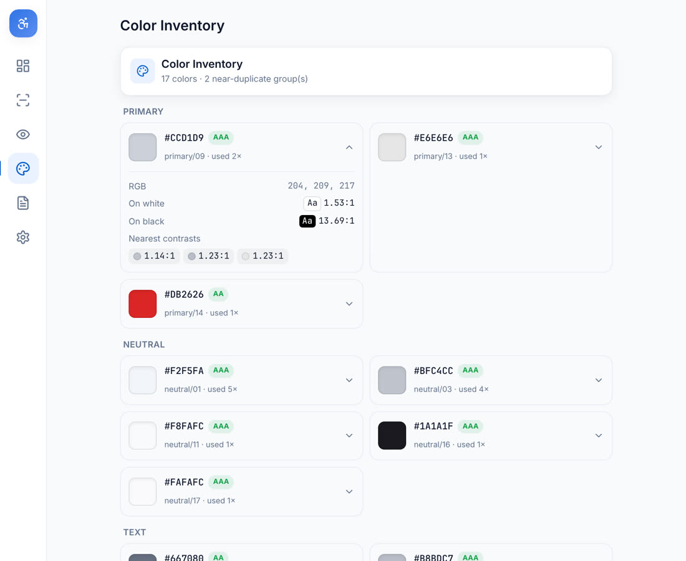
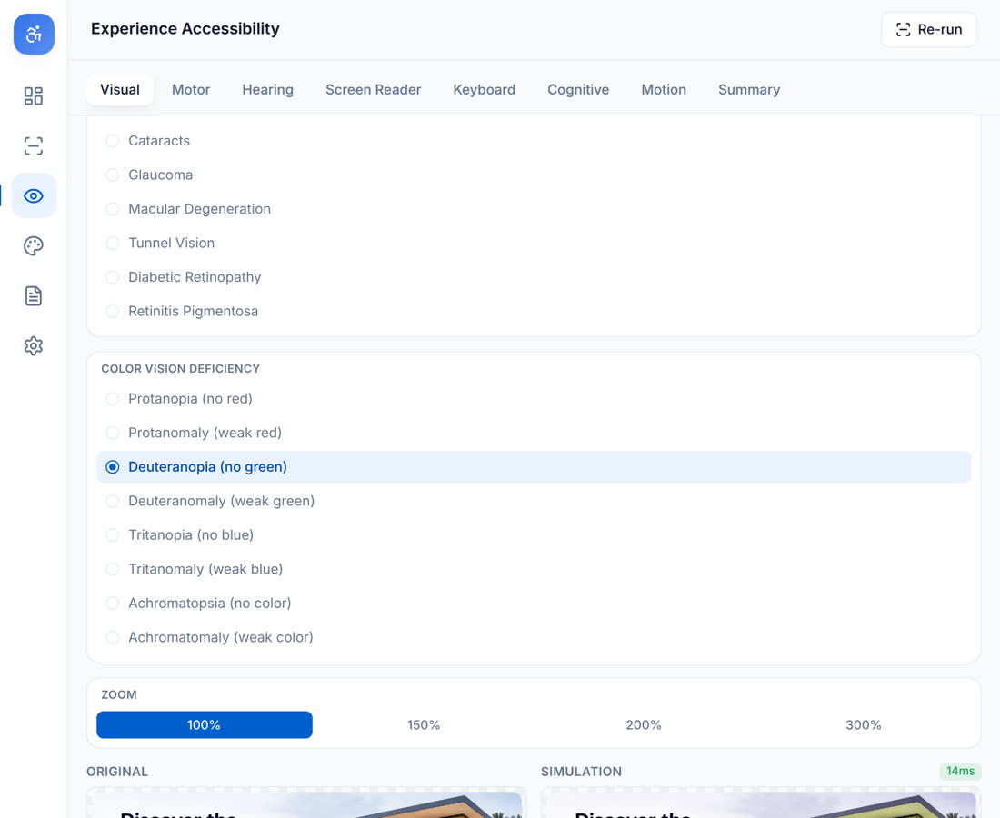
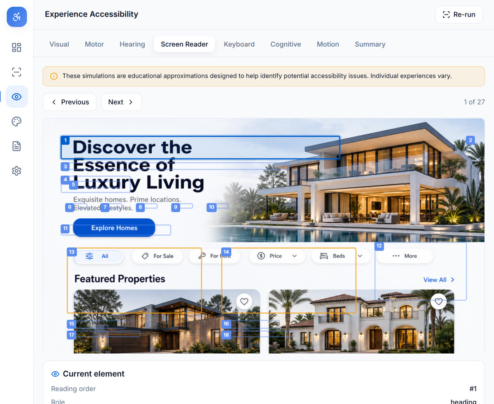
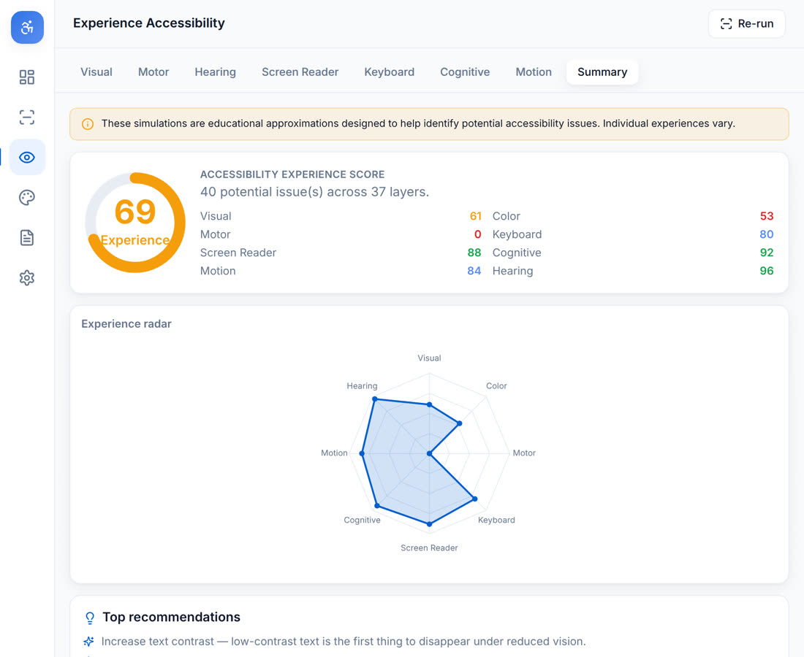
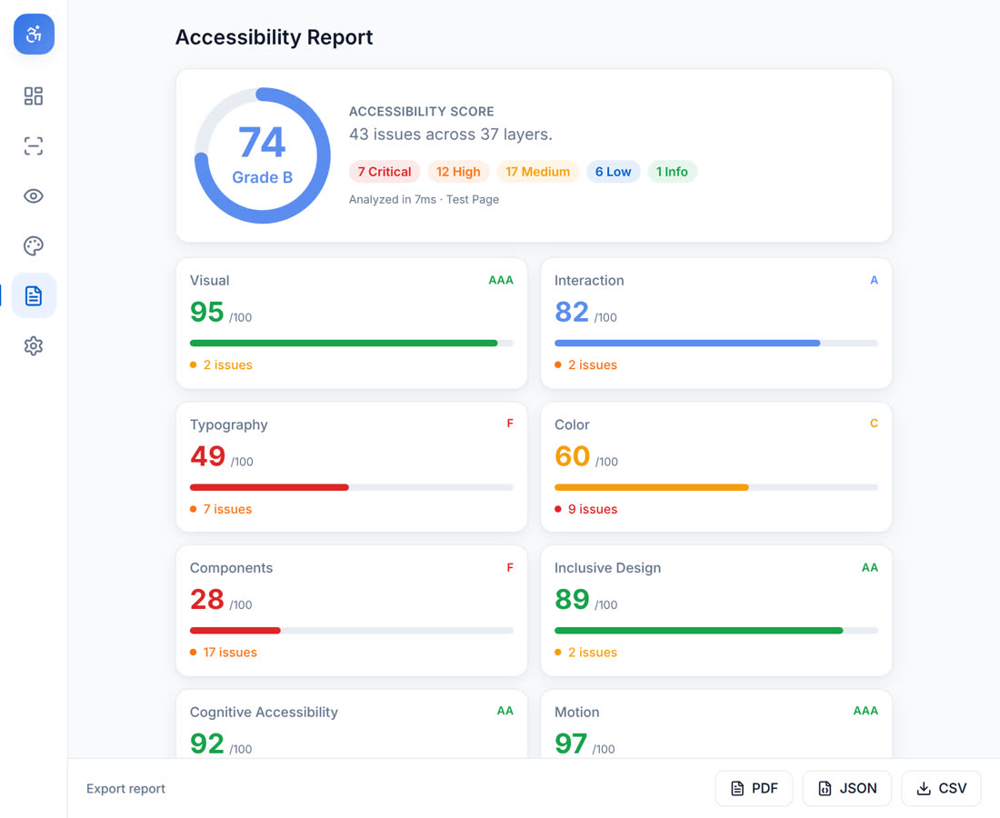

A professional accessibility auditor and a disability & accessibility experience simulator — built right into Figma. Designers get an accessibility score, actionable fixes, and can preview how real people with different visual, motor, and cognitive needs experience their screens.
30-second walkthrough — captured from the live plugin UI.
Accessibility is usually checked at the very end — in code, by specialists, long after design decisions are locked in. Most Figma tools only measure color contrast, and none help a designer feel what their interface is like for someone with low vision, color blindness, a motor impairment, or a screen reader.
Inclusive Audit brings a full accessibility consultant into the design canvas. Select any frame and it runs eleven independent analyzers, scores the screen, links every issue to the exact layer with a suggested fix — and then lets you step into the shoes of users with different needs through live, on-canvas simulations.
Two connected pillars — measure, then experience.

An overall score and grade, per-category breakdowns, and issue cards with WCAG references, affected layers, a “Locate” button, and applicable one-click fixes. Includes a full color inventory with contrast ratings and accessible replacements.

Preview the design through low vision, cataracts, glaucoma, tunnel vision and eight color-vision deficiencies; walk a simulated screen-reader reading order and keyboard focus path; and review motor, hearing, cognitive and motion heuristics — summarized on a radar dashboard.
Simulations are clearly labeled as educational approximations to help identify issues — the plugin never claims to replicate an individual’s real experience.
Details that make it feel like a professional tool, not a checker.
Every issue selects the exact Figma node and can apply a fix (font size, line height, color) in place.
Color-vision deficiencies use accepted transformation matrices, rendered live on the exported frame.
See the whole screen across every impairment at once, then click any variation to inspect it.
Simulated reading order and focus path, stepping through elements and selecting each layer.
All previews render inside the plugin canvas — your design is never modified.
Audits 500+ layers in under 5s and runs fully offline — no design data leaves Figma.
Captured from the live plugin UI.






A thin Figma sandbox extracts a serializable snapshot of the frame (and a capped PNG for the visual simulator) and posts it to the UI over a typed message bridge. All analysis is performed by pure, unit-tested modules in the UI thread — so each analyzer and simulation is independent, reusable, and testable without a running Figma instance.